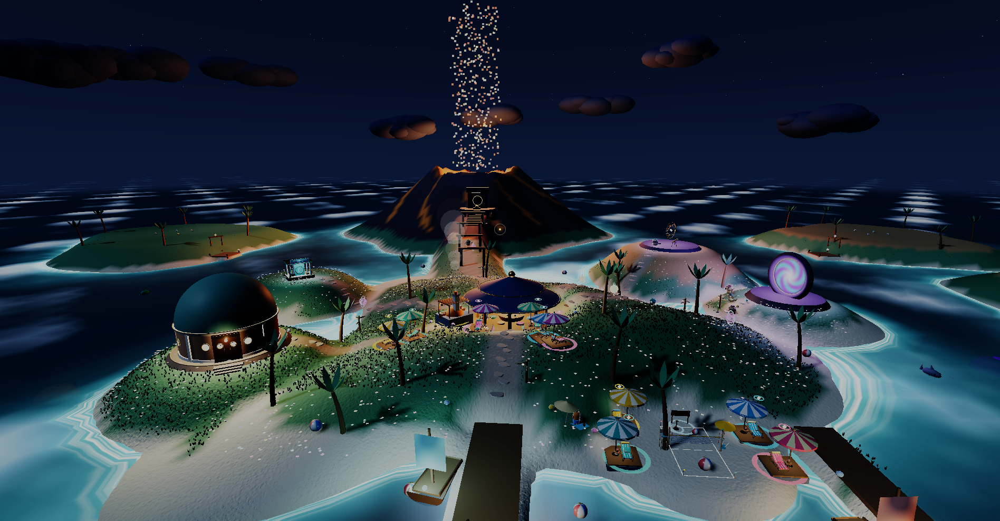
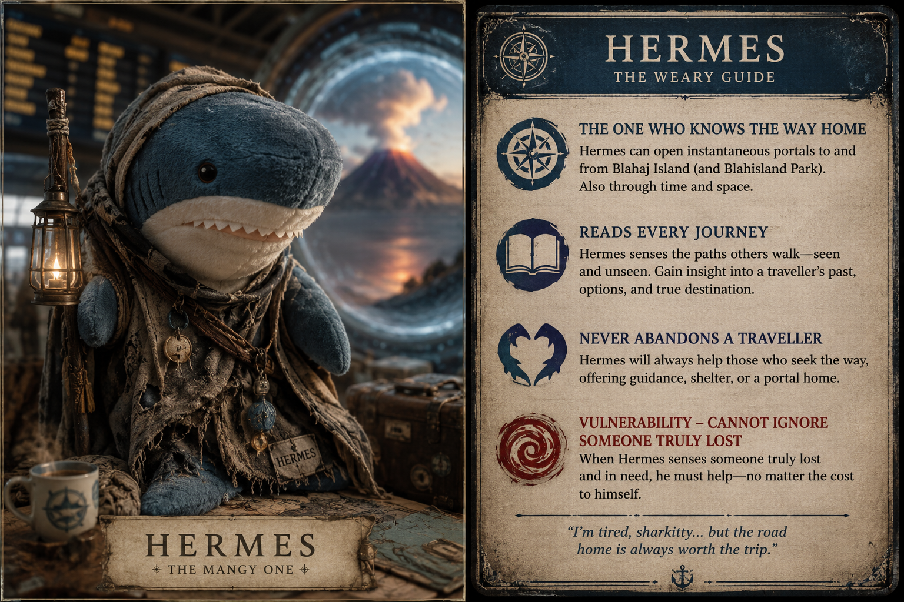

1Explore Blåhaj Island, feed Birbs & brave the Volcano
Hermes is the interdimensional wanderer of Blåhaj Island. Bearing the ornate Between Lantern, he can sense the seams where realities fold together.
Return here to store or withdraw shared supplies for Helen, Russell, and fellow sharks.
“Every meal is a performance. Every friend is the best kind of audience.”
Send the invite link below to Helen on Discord. When she opens it, you will automatically link up!
Helen does NOT need to type any codes or press any buttons. Clicking your link opens the game and puts her directly into your room!
Want to use a specific word like HELEN-RUSSELL or SACRED-TEA? Type it here and click Apply:
Click any tapestry to inspect the original canon artwork and lore from your vault.
Boats racing across The Water That Doth Not Wet as the Great Portal Gate shimmers in the harbour.
Earn Trial Points by surviving the Volcano Trial Dungeon (enter at the Rear North Wharf & emerge on the Front Balcony), knocking 5 Carrots off the Volcano Balcony, or feeding 10 Birbs with Breb!
Track your position across the archipelago. Press M anytime to toggle map!
Click any discovered pin to view travel details and Between Portal options.
Fine-tune sound volumes, camera field of view, visuals, and interface options. Settings are automatically saved.
Real-time simulation controls for the 1-hour Great Seam cycle, cosmic rift hunting across instances, and co-op land incursion defense.
Entering the ancient subterranean halls…